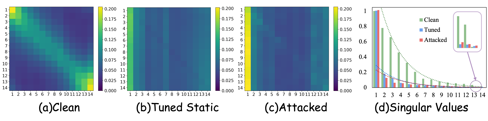
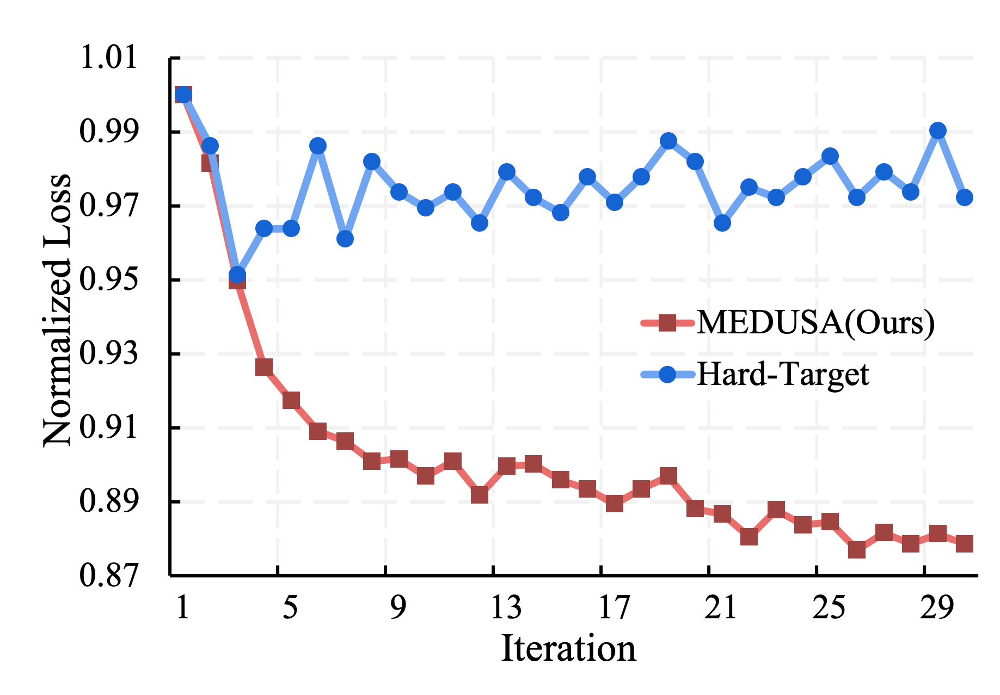

Abstract
With the widespread application of Video Diffusion Models (VDMs), video synthesis has achieved remarkable temporal dynamics. Image-to-Video (I2V) generation allows users to provide reference images, which enables attackers to inject adversarial noise into these conditions. Due to the robust spatio-temporal priors in VDMs, conventional frame-level attacks merely induce superficial artifacts and struggle to suppress the synthesis of motion semantics. In this work, we approach the problem by exploring the underlying mechanism of temporal dynamics. We reveal that the static video manifests as temporal rank collapse, a degenerate state characterized by rank-1 degeneracy within the temporal attention matrix. Guided by this insight, we propose Motion Elimination in Diffusion Using Spectral Attack (MEDUSA) to freeze the video. It minimizes the nuclear norm of the attention matrix to induce the temporal rank collapse. This objective circumvents the vanishing gradient problem encountered when directly imposing a rigid temporal mapping on the attention matrix. Furthermore, we provide a mathematical analysis of this phenomenon and the gradient vanishing problem during the optimization. Experiments confirm that MEDUSA achieves excellent performance and validates the effectiveness of spectral constraints.
Method & Analysis



Result
BibTeX
@inproceedings{yu2026medusa,
title = {MEDUSA: Motion Elimination in Diffusion Using Spectral Attack},
author = {Yu, Hongwei and Zha, Daoqing and Ding, Xinlong and Li, Jiawei and Zhuo, Junbao and Liu, Qiankun and Ma, Huimin and Chen, Jiansheng},
booktitle = {Proceedings of the International Conference on Machine Learning},
year = {2026}
}